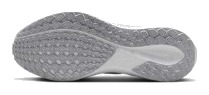
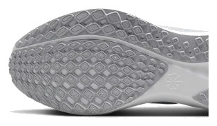

DAILY｜デイリートレーナー
定番は、最強を意味しない。
ランニングシューズの定番と聞いて、この靴を思い浮かべる人は多いはずだ。ところが計測値で点数を付けると、デイリー67足中59位だった。悪い靴だからではない。突出した項目がないのである。名前で買う前に、数字を確認しておきたい。
癖のない靴が欲しい人。乾いた路面を一定のペースで走る人。曲がりやすい靴が好きな人。
雨の日も走る人。同じ予算で、点数の高い靴を選びたい人。


摩擦係数0.25は、今回比べた6足で最も低い。ニンバス 27の0.84やスーパーブラスト 2の0.83とは3倍以上の差がある。性能点を押し下げている要因の一つで、濡れたマンホールや横断歩道では意識して走りたい。
衝撃吸収は125SA。ボメロ 18やクリフトン 10の147には届かない。前足部のエネルギーリターンは61.4%で、6足の中では上から2番目と悪くないが、スピード靴と呼べる水準でもない。
曲げ剛性は9.4Nと柔らかい。厚底の硬さが苦手な人には、この素直さが合う可能性がある。点数には入っていないが、選ぶ理由にはなる。
5点満点。計測値を当サイトのルールで点数にしたもの。
内訳を見ると、4点を超える項目がない。安定性と耐久性、通気性は4.0あるが、クッション3.0、グリップ2.0、スピード2.5が点数を押し下げた。どれも致命的とまでは言えない。ただ、デイリーの性能点はクッションと安定性の比重が大きく、ここで上位の靴に差を付けられている。
高いほど衝撃を吸収する。
高いほど滑りにくい。
| ペガサス 41 | ボメロ 18 | ノヴァブラスト 5 | |
|---|---|---|---|
| 価格 | ¥16,500 | ¥16,500 | ¥15,400 |
| 実測重量 | 281g | 298g | 254g |
| 衝撃吸収（SA） | 125 | 147 | 141 |
| エネルギーリターン前足部 | 61.4% | 58.9% | 66.5% |
| 摩擦係数 | 0.25 | 0.38 | 0.53 |
| 摩耗深度 | 0.9mm | 1.1mm | 0.9mm |
| 性能点 | 3.22 | 3.64 | 4.08 |
| コスパ点 | 3 | 3.5 | 5 |
同じ¥16,500のボメロ 18はクッションで上回る。少し安いノヴァブラスト 5は、性能点もコスパ点も大きく上回る。数字で選ぶなら、ペガサスを最初に選ぶ理由は見つけにくい。
ヒール剛性は5段階の4で、かかとのホールドはしっかりしている。かかとの幅は89.2mmと今回の中では狭めだが、安定性の点は4.0を確保した。通気性も4と高く、夏場は扱いやすい。不足があるとすれば、走りを楽しくする要素である。
ペガサスを選ぶ理由が「定番だから」だけなら、一度立ち止まっていい。一方、今履いている世代が足に合っているなら、それは数字より強い理由である。試着では、曲がりやすさが自分の走りに合うかを確かめたい。
摩耗深度0.9mmから推定した寿命は約600kmで、1kmあたり約28円。週15kmなら9か月ほど持つ。すでに履いて足に合っている人は、無理に替える必要はない。これから初めて選ぶなら、同じ店で他の候補と履き比べたい。
定番という安心感は本物だが、計測値は平凡である。足に合うなら良い靴で、合わないなら名前にこだわる必要はない。雨の日のグリップだけは、覚えておいてほしい。
※本記事は海外ラボ（RunRepeat）の計測データとメーカー公表値、当サイトの計算をもとにした分析です。計測はUS9（約27cm）です。1kmあたりの費用は摩耗深度から推定した寿命での概算です。価格は当サイトの掲載値で、変更されている場合があります。